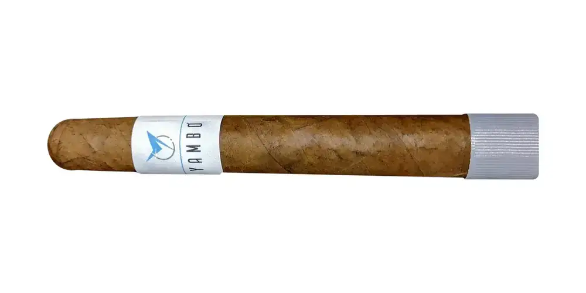

Yambó Toro Box Press
By Yambó Cigars, Puerto Rico
Nicaraguan binder; Puerto Rican and Nicaraguan filler (2020 post). Notes they publish: creamy, coffee, earth, pepper and wood. They describe it as medium to full bodied. From a search result; not verified at the source.
- Wrapper: Habano
- Vitolas: Toro 6 x 52 (box press)
See Yambó Toro Box Press in the app, rate it and save it to Mi Hoja.